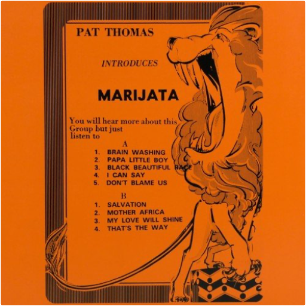

 introduces marijatapat thomas  'Pat Thomas Introduces Marijata' is a seminal Ghanian album that fuses highlife, reggae, folk, funk and soul, from legendary vocalist Pat Thomas. Originally released in 1976 on Gapophone Records. 'Marijata' was a group made up of three members - Kofi 'Electric' Addison on drums, Bob Fischlan on organ and Nat Osmanu on guitar, hailing from Ghana. Pat Thomas career began in 1969 with the 'Broadway Dance Band', leaving a year later to join the 'Uhuru Dance Band'. He then played with Ebo Taylor's 'Blue Monks' and finally formed the 'Sweet Beans' in 1973 where he really made his name. The group released 'False Lover' in 1974, split and then reformed as Marijata, releasing 'Marijata' (also available on Mr Bongo) and this album, 'Pat Thomas Introduces Marijata'.  Released only in Japan in 1997, this collection of live and demo tracks - available for the first time on vinyl - is a must for Rage Against The Machine fans! Includes fiery versions of ''Take The Power Back'' and ''Bombtrack,'' covers of N.W.A.'s ''Fuck Tha Police'' and Public Enemy's ''Black Steel In The Hour Of Chaos'' (with Chuck D on lead vocals) and tracks from the band's original 1991 demo tape.  RSD. Previously unreleased on vinyl. Limited and hand-numbered to 2,000 copies worldwide. Almost 10 years ago, Light in the Attic and DJ Supreme La Rock compiled the first ever set of vintage Pacific Northwest soul on Wheedle's Groove: Seattle's Finest in Funk & Soul 1965-75 (LITA 009) featuring such rare sides as "I Just Want to Be (Like Myself)" by legendary funk outfit Robbie Hill's Family Affair. Nearly a decade on, more unheard Seattle soul gems continue surfacing. This November 29th, Light in the Attic is honored to release, for the first time on vinyl, Gotta Get Back: The Unreleased L.A. Sessions from Robbie Hill's Family Affair. Originally recorded at RCA Studios in Los Angeles in January 1975 with Executive Producer Cuba Gooding Sr. and the Main Ingredient (the Family Affair were the Ingredient's backing band at the time), these five tracks remained lost until the recent discovery of the original multi-track masters. The tapes were carefully mixed by renowned engineer and producer Steve Fisk. To say it's a miracle that these tapes surfaced would be a massive understatement. Robbie named his band "Family Affair" for a reason - his band is his family and what you hear is proof that the blood really is thicker than the mud. What you're now holding in your hands is a pinnacle recording from a band that continues on to the present day, surviving in Seattle's Central District, carrying on a decades' long tradition. | roy lee johnson and the villagersroy lee johnson and the villagers 2017 vinyl reissue of unsung Stax label nugget from 1973. Veteran R&B singer & guitarist (of "Mister Moonlight" fame) with tight & funky young backing band recorded at Muscle Shoals studios  Soul Jazz Records' Nigeria Soul Power 70 album showcases the influence of funk, rock and disco on Nigerian music during the 1970s. Originally released as a now-long-out-of-print collectors' 7' RSD box, this fully expanded album release now also includes extra tracks from Sonny Okosuns, Wings, Chief Kollington Ayinla and more. While for many people the fusion of funk and jazz music with Nigerian rhythms and aesthetics began with Fela Kuti and his afro-beat sound, in fact this can be traced further back to the phenomena of the 1960s Nigerian artists and house bands in nightclubs and hotels who interpreted US soul and pop music with a local flavour and none more so than Geraldo Pino, the 'African James Brown' who features heavily in this collection. Other similarly inspired Nigerian funk and soul artists featured here included Tony Grey and his Ozimba Messengers and Don Bruce and The Angels. Nigeria Soul Power 70 includes a number of tracks from the group Wings originally known as BAF (Biafran Air Force) Wings, an army band formed during the Biafran civil war in Nigeria. The groups' heavy mixture of funk, rock and African styles was popular among many Nigerian groups at the time. Beneath the shadow of the few Nigerian artists who signed international recording deals in the 1970s ' Fela Kuti, King Sunny Ade, Chief Ebenezer Obey ' lies of vast wealth of largely undiscovered musical transmutation and cultural cross-pollination, and included here are heavy afro-funk/rock and disco tracks from artists such as the legendary Sonny Okosuns as well as rare cuts from little-known outside of Nigeria - groups such as Colomach and MFB. Most of these obscure artists signed to major labels in Nigeria in the commercial slipstream that opened up as Philips, Decca and EMI tried to emulate the international success of the big three international Nigerian artists. Finally featured here is Kollington Ayinla, one of the co-founders of Nigerian Fuji music, who gives us perhaps the heaviest of all tracks on this album. Ayinla is the great moderniser of the Fuji sound and in the late 1970s began adding Bata drums and synthesizers to his authentic music to create a powerful and heavy new fusion of traditional and modernist aesthetics, embracing both new technology and experimentation while rooted firmly in Nigerian historical lineage.  Limited double 180 gram audiophile vinyl LP pressing including four page booklet and exclusive poster. Housed in a PVC protective sleeve. Al Simmons, once the U.S. government's greatest soldier and most effective assassin, was mercilessly executed by his own men. Resurrected from the ashes of his own grave in a flawed agreement with the powers of darkness, Simmons is reborn as a creature from the depths of Hell. A Hellspawn. Now Spawn must choose between his life on Earth and his place on a throne in Hell. Spawn is one of the longest-running and most-respected independent comics of all time. The 1997 film Spawn is based on the comic book character of the same name, written by Todd McFarlane and published by Image Comics. Spawn (The Album) was originally released in 1997 and brought popular rock and metal bands like Metallica, Korn, Marilyn Manson and Silverchair together with well-known DJs and producers such as The Crystal Method, Roni Size, and Atari Teenage Riot. The album debuted at #7 on the U.S. Billboard 200 and stayed in the chart for 25 weeks. The album includes the singles '(Can't You) Trip Like I Do' by Filter & The Crystal Method and 'Long Hard Road Out Of Hell' by Marilyn Manson & Sneaker Pimps.  Build Bridges combines stellar musicianship with unlimited drive and lag proof swing-ability. You can hear the maturity of their sound, which inadvertently allows you to appreciate their previous recordings even more. They're all in the same ballpark yet seem to be on a completely different playing field. Tim Felten's lineup not only shows his keen ability to pick top choice artists, but also shows his sense of direction and investment to high quality musicians. The Sure Fire Soul Ensemble is a staple of the west cost soul/jazz/funk scene and with their third LP, they solidify their position. Heavy grooves and drums, with top tier musicianship and writing. Build Bridges is just as sophisticated as it is soulful and funky!  It is well known that talent never guarantees any success in the music industry. This sentence summarizes the story of The 9th Creation, one of the best soul, funk, disco and boogie band to make it out of Stockton, CA. Founded by J.D. and A.D Burrise in 1970, the 9th Creation went on for almost two decades and released 3 albums and half a dozen singles that regularly flirted with the US Charts, getting them featured on Soul Train in 1975 and allowing them to tour North America and Japan a few times over. 9th Creation regularly shared the bill with Irma Thomas, James Brown, The Whispers, The Sylvers, The Main Ingredient, Con Funk Shun and many others. The music that J.D, A.D Burrise and their 10-12 band members created was a perfect combination of West Coast raw soul, disco and funk that resulted in a religious fan following across the globe. To this day, The 9th Creation has been sampled by Pete Rock & C.L. Smooth, Artifacts, Quasimoto, 3rd Bass, Basement Jaxx and many others. 9th Creation was undoubtedly one of the greatest funk band of the Seventies. Past Due Records is proud to officially reissue the 9th Creation's essential full lengths and singles, carefully remastered and all in their original artworks. Bubble Gum is 9th Creation's first album. Originally scheduled to be released on Bill Wither's Sussex label it was released on PYE in Europe and self released on Ritetrack in the US after Sussex went under. Bubble Gum is a classic funk and soul album known to many as a treasure trove for beats and breaks. |

Julien
Collection Total:
1 888 Items
1 888 Items
Last Updated:
Aug 16, 2021
Aug 16, 2021


 Made with Delicious Library
Made with Delicious Library